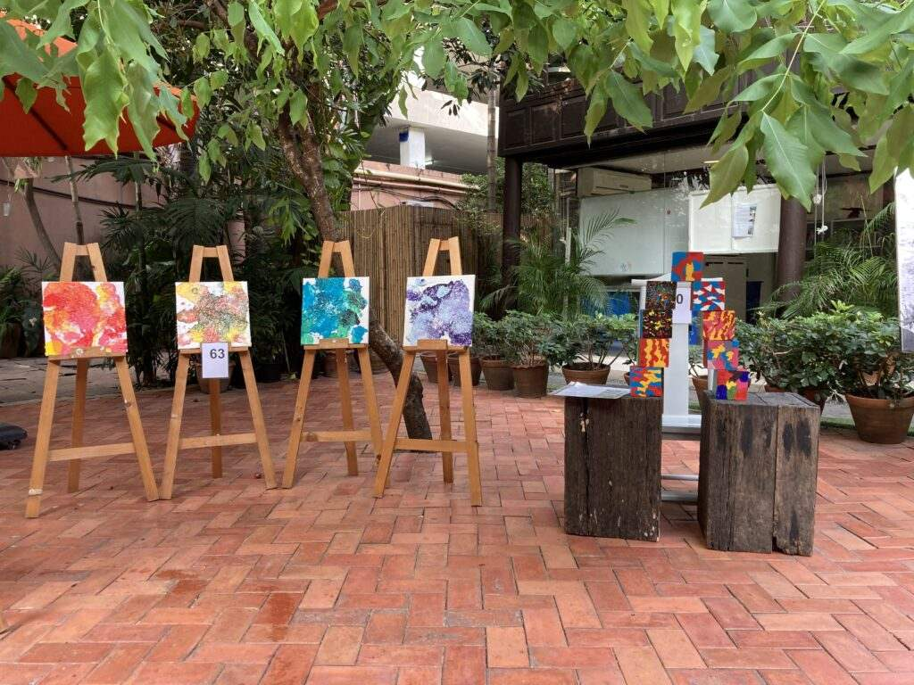

From me to we.
Giving at ELC starts with the children. In the sala, the school's gathering place, they build connections with each other, with their teachers and with the world, and somewhere in that the me becomes a we. The fundraising this community does grows out of exactly that.

For Art from the Heart, every class made a collaborative artwork and families bought raffle tickets to take one home. The money raised went to the Pediatric Cardiac Surgery Foundation to fund life-saving heart surgery. Read the story on our blog.

Charity days here have a familiar shape: children and parents making, baking and selling together, and children learning along the way that privilege carries a duty to others. Read the story on our blog.
The giving reaches beyond the school gates too. Families have been invited to stand with the Bookworm Foundation, which works for equal reading opportunities for children in Chiang Mai, and the Bangkok Community Help Foundation has shared with the school community how much difference even a thousand baht can make close to home. Read the stories on our blog: Bookworm Foundation and Bangkok Community Help Foundation.
When a fundraising drive opens, it appears at the top of this page. Back to La Comunità.